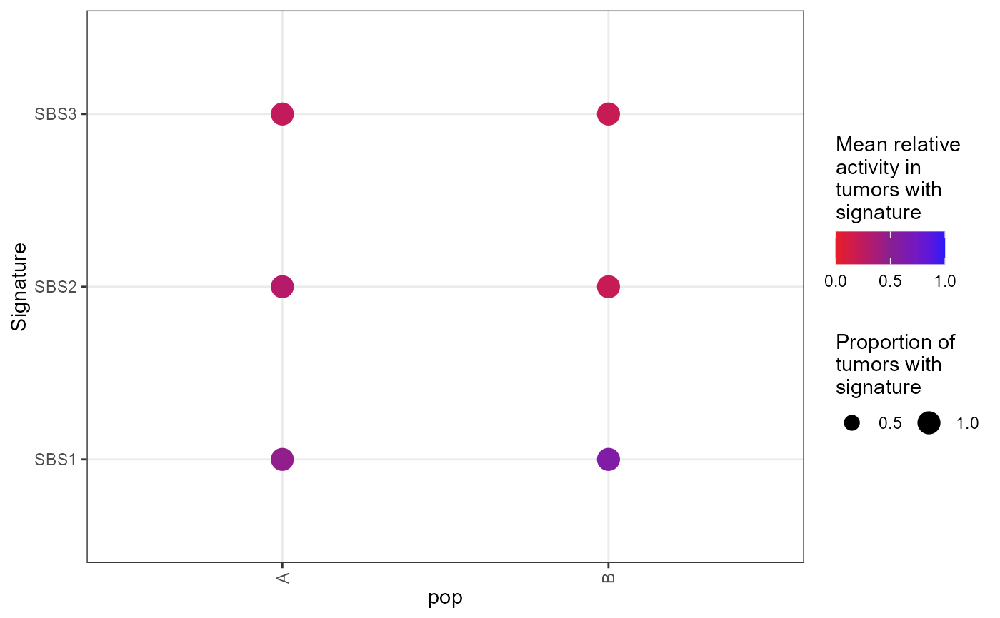

R/data_vis_functions.R
plot_dots.RdThis function generates a dot plot with signatures along the y-axis, group/populations along the x-axis, dot size corresponding to the fraction of samples in each population containing a signature, and dot color corresponding to the mean relative activity of mutations to that signature.
plot_dots(
sig_activity,
group = colnames(sig_activity)[1],
K = ncol(sig_activity) - 1 - as.numeric(!missing(facet)),
max_dotsize = 5,
pivot = FALSE,
facet,
threshold = 0
)A matrix or data frame with rows containing non-negative entries that sum to 1. Each row represents a sample, each column represents a mutational signature, and each entry represents the abundance of that signature in the sample. If sig_activity contains any metadata, it must be on the left-hand side of the matrix, the right K entries of each row must sum to 1, and K must be specified. Otherwise, all entries of each row must sum to 1.
A string (or vector of strings) specifying the name(s) of the column(s) that describes which group(s) each sample belongs to. Default is the first column of sig_activity: colnames(sig_activity)[1].
Optional; the number of signatures in the matrix. Default is
K=ncol(sig_activity)-1-as.numeric(!missing(facet)), the number of columns in
sig_activity minus either 1 (since one column must specify the group) or 2 if
facet is provided, since one column must specify the variable on
which to facet.
Optional; a number specifying the maximum size for each dot.
Optional; set pivot=TRUE if you would like to plot groups
on the y-axis and signatures on the x-axis. Default is pivot=FALSE.
Optional; a string specifying the name of the column by which you would like to facet your plot.
Optional; a number between 0 and 1 specifying the minimum mean activity of a signature in order for it to be shown as a dot. Default is threshold = 0.
A ggplot object containing a dot plot visualization of the mean mutational signature activities
# Make an example matrix.
# Each row is a sample. Rows sum to 1.
sig_activity = matrix(c(
"A", .4, .2, .4,
"A", .5, .3, .2,
"A", .5, .4, .1,
"B", .6, .1, .3,
"B", .6, .3, .1
),
nrow = 5,
byrow = TRUE
)
colnames(sig_activity) = c("pop", "SBS1", "SBS2", "SBS3")
sig_activity = dplyr::mutate(data.frame(sig_activity), dplyr::across(c(SBS1, SBS2, SBS3),
as.numeric))
plot_dots(sig_activity,
K = 3, # How many categories per vector?
group = "pop"
)
#> Joining with `by = join_by(group, Signature)`
